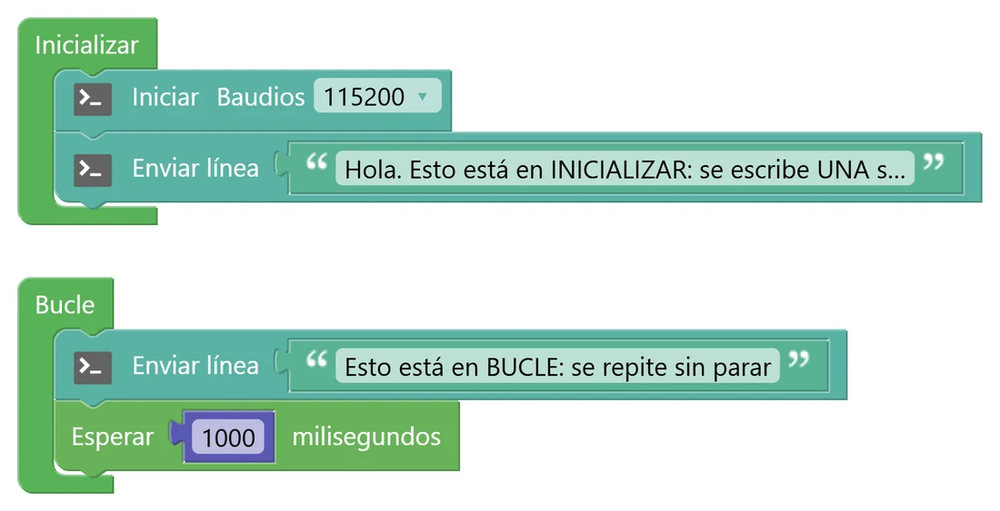
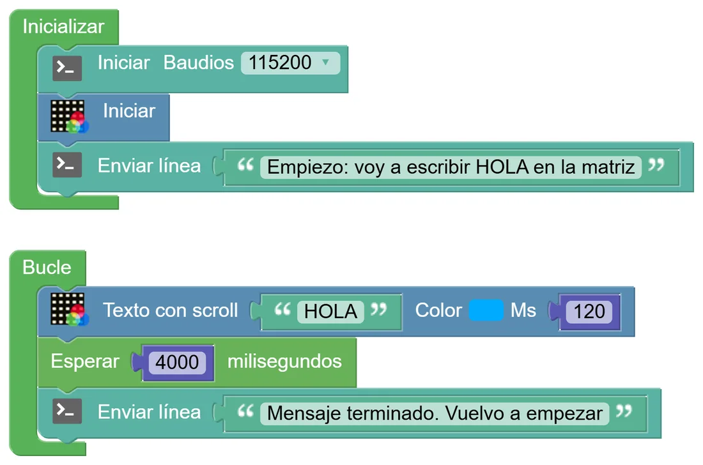

N0 Conoce tu placa y tu entorno
Antes de programar nada, vamos a saber qué tenemos entre manos, a preparar el entorno y a conseguir que la placa nos hable por primera vez.
🎯 Objetivo
- Saber qué es un microcontrolador y en qué se diferencia de un ordenador.
- Reconocer los sensores y actuadores que lleva la micro:STEAMakers.
- Crear un proyecto en STEAMakersBlocks, subirlo a la placa y abrir la consola serie.
- Entender para qué sirven las dos zonas de todo programa: Inicializar y Bucle.
🧠 Antes de empezar: ¿qué es un microcontrolador?
Un microcontrolador es un ordenador diminuto metido en un solo chip. Tiene su procesador, su memoria y sus «patas» (los pines) para comunicarse con el mundo. No tiene pantalla ni teclado: se dedica a una sola tarea, la que tú le programes, y la repite sin descanso mientras tenga alimentación. Hay microcontroladores en el microondas, en la lavadora, en el mando de la tele y en cualquier juguete que se mueva o se ilumine.
Todos los sistemas que vamos a construir siguen el mismo esquema: entrada → proceso → salida. Los sensores (luz, sonido, temperatura, botones…) son las entradas; el programa que corre en el ESP32 es el proceso; y los actuadores (la matriz de LED, el zumbador, un motor…) son las salidas.
🔍 La micro:STEAMakers por dentro
Dale la vuelta a la placa con los botones y pulsa sobre cada número (o sobre la lista) para saber qué es, para qué sirve, qué pin usa y en qué nivel del manual lo vas a trabajar. Fíjate en que por detrás los botones A y B aparecen cambiados de lado: es la misma placa vista desde el otro lado.
Aquí aparecerá su descripción, el pin que usa y en qué nivel lo trabajarás.
El cerebro es un ESP32 de doble núcleo a 240 MHz, con 520 KB de RAM, 4 MB de memoria flash para tu programa, WiFi y Bluetooth. Imágenes de la placa: manual «ESP32 micro:STEAMakers» de Innova Didactic, utilizadas con su permiso.
🛠️ Prepara tu entorno (solo la primera vez)
- Entra en steamakersblocks.com e inicia sesión. Puedes usar Iniciar sesión con Google o con Microsoft con tu cuenta del centro. (Antes esta web se llamaba ArduinoBlocks; si encuentras tutoriales con ese nombre, es lo mismo).
- Comprueba que en tu ordenador está el Connector, el programa que hace de puente entre la web y la placa. Sin él, la web no puede enviar nada por el USB. Si no está, se descarga desde la propia web (menú de ayuda, «Connector»).
- Pulsa Nuevo proyecto → Iniciar un proyecto personal. En Tipo de proyecto elige ESP32 micro:STEAMakers (¡no otro: cada tipo trae bloques distintos!) y ponle un nombre que se entienda, por ejemplo N0 Consola – Tu nombre.
- Conecta la placa al ordenador con un cable USB. Ojo: hay cables que solo cargan y no transmiten datos; si la placa no aparece, prueba con otro.
- Cuando tengas el programa hecho, pulsa Subir. La web lo traduce a C++, lo compila y lo envía a la placa. Tarda unos segundos; espera a que termine antes de tocar nada.
- Abre la Consola, elige la velocidad 115200 y pulsa Conectar. A partir de aquí verás todo lo que tu programa envíe con los bloques «Enviar línea».
🧩 Programa 1 · Una vez… y siempre
Todo programa de STEAMakersBlocks tiene dos zonas. Lo que pongas en Inicializar se ejecuta una sola vez, nada más arrancar la placa: ahí se preparan las cosas (abrir la consola, encender la matriz, dar valores iniciales). Lo que pongas en Bucle se repite una y otra vez, para siempre. Este primer programa sirve para verlo con tus propios ojos.

- Del menú Comunicaciones → Puerto serie, arrastra a Inicializar el bloque Iniciar Baudios y elige 115200.
- Debajo, pon un Enviar línea con un texto (lo encontrarás en el menú Texto): «Hola. Esto está en INICIALIZAR…».
- En Bucle, pon otro Enviar línea con «Esto está en BUCLE…» y, debajo, Esperar 1000 milisegundos (menú Tiempo).
- Sube el programa y abre la consola a 115200.
💡 Para entenderlo: Inicializar y Bucle
Piensa en un día de clase. Por la mañana, una sola vez, preparas la mochila y desayunas: eso es Inicializar. Después, cada hora se repite lo mismo: entra el profesor, explica, suena el timbre… y vuelta a empezar: eso es el Bucle. La placa no «termina» nunca: cuando llega al final del Bucle, vuelve arriba y empieza otra vuelta, millones de veces si hace falta.
Los baudios son la velocidad a la que la placa «dicta» los datos al ordenador. Si una persona dicta muy deprisa y la otra escribe despacio, salen palabras sin sentido. Por eso placa y consola tienen que estar a la misma velocidad: 115200.
🖥️ Mira la consola
Así debería verse. Pulsa ▶ Simular para verlo en marcha (la simulación va al mismo ritmo que la placa).
- ¿Cuántas veces aparece la línea de Inicializar? ¿Y la del Bucle, al cabo de 10 segundos?
- Pulsa el botón RESET de la parte de atrás de la placa (búscalo en la infografía). ¿Qué vuelve a salir en la consola? ¿Por qué?
- Cambia la espera a 250 ms. ¿Cuántas líneas por segundo salen ahora?
🧩 Programa 2 · Hola, mundo… en la matriz
Ahora la placa va a decir algo con luz. La matriz de 5×5 LED de colores es pequeña, así que para escribir una palabra hay que hacerla pasar de derecha a izquierda, como en los carteles luminosos.

- En Inicializar: Iniciar Baudios 115200 y, del menú micro:STEAMakers → NeoMatrix, el bloque Iniciar (deja la matriz apagada para empezar desde cero).
- En Bucle: Texto con scroll (micro:STEAMakers › NeoMatrix) con la palabra HOLA, el color que quieras y 120 ms (la velocidad: cuanto menos, más rápido).
- Añade Esperar 4000 ms para dar tiempo a que pase el texto y, después, un Enviar línea que avise de que ha terminado.
- Quita el bloque Esperar y vuelve a subir el programa. ¿Qué pasa con el texto? ¿Por qué crees que ocurre?
- El scroll avanza una columna cada 120 ms. Si la palabra ocupa unas 25 columnas, ¿cuánto tarda en pasar entera?
🩺 Si algo no funciona
| Lo que pasa | Lo más probable | Qué hacer |
|---|---|---|
| No aparece ningún puerto para subir | El Connector no está abierto o el cable no transmite datos | Abre el Connector y prueba otro cable o puerto USB |
| La consola muestra símbolos raros (ÿ⸮⸮…) | La velocidad de la consola no coincide con la del programa | Elige 115200 en la consola, la misma que en el bloque Iniciar |
| La consola no muestra nada | Falta el bloque Iniciar Baudios o la consola no está conectada | Revisa Inicializar y pulsa Conectar en la consola |
| Error al compilar | Tipo de proyecto equivocado o un bloque suelto | Comprueba que el proyecto es «ESP32 micro:STEAMakers» y que no quedan bloques sueltos |
🚀 Retos
Tu mensaje
Cambia HOLA por tu nombre, elige otro color y haz que en la consola, al arrancar, salga «Placa de [tu nombre] lista».
Latido de vida
Haz que la consola escriba «sigo viva» exactamente cada 2 segundos mientras la matriz muestra tu mensaje. ¿Dónde tienes que colocar cada bloque?
Cuenta antes de mirar
Con una espera de 500 ms en el Bucle, calcula cuántas líneas debería escribir la placa en 1 minuto. Compruébalo cronometrando y explica en el porfolio por qué puede salir alguna menos.
🔧 Bajo el capó: lo que hay detrás de los bloques
Cuando pulsas Subir, STEAMakersBlocks convierte tus bloques en un programa en C++ (el lenguaje de Arduino), lo compila y lo envía a la placa. Este es el código real que genera el Programa 1:
void setup() // = Inicializar: se ejecuta UNA vez { Serial.begin(115200); // abre el puerto serie a 115200 baudios Serial.flush(); while(Serial.available()>0) Serial.read(); // vacía lo que hubiera llegado Serial.println(String("Hola. Esto está en INICIALIZAR: se escribe UNA sola vez.")); } void loop() // = Bucle: se repite SIEMPRE { yield(); // deja respirar al sistema (WiFi, tareas internas) Serial.println(String("Esto está en BUCLE: se repite sin parar")); delay(1000); // espera 1000 ms sin hacer nada más }
🐍 Lo mismo en Python
import time print("Hola. Esto está en INICIALIZAR") while True: print("Esto está en BUCLE") time.sleep(1)
🧮 ¿Qué significa 115200 baudios?
Es la velocidad del puerto serie: 115 200 bits por segundo. Cada carácter viaja en 10 bits (8 de datos más uno de inicio y otro de parada), así que caben unos 11 520 caracteres por segundo. La línea del Bucle tiene 40 caracteres más el salto de línea, y tarda unos 3,6 ms en enviarse: casi nada comparado con la espera de 1000 ms.
Fíjate en que no existe un «programa principal» como en Python: en un microcontrolador, loop() es el bucle infinito, y si se terminara la placa no tendría nada que hacer. Por eso en Arduino no escribimos while True: ya lo hace el sistema por nosotros.
🔎 ¿Lo has entendido?
Cuando termines, haz una captura con tu puntuación para el porfolio.
📁 Al porfolio
- Captura de tus dos programas en bloques (con tu nombre en el proyecto).
- Captura de la consola del Programa 1, donde se vea la línea de Inicializar y varias del Bucle.
- Foto o vídeo corto de la matriz mostrando tu mensaje (reto básico).
- Respuesta, con tus palabras, a esta pregunta: ¿qué pondrías en Inicializar y qué en Bucle si quisieras que la placa saludara al encenderse y después parpadeara siempre?
- Captura de tu resultado en «¿Lo has entendido?».